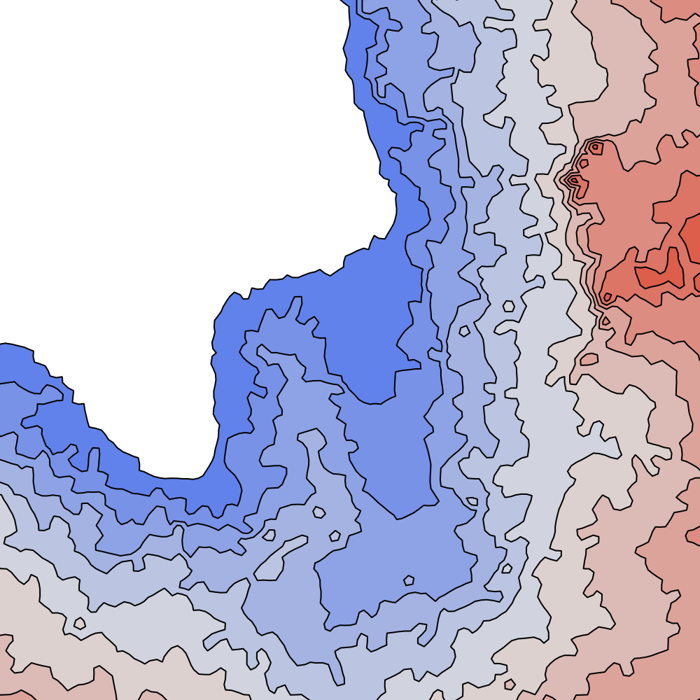
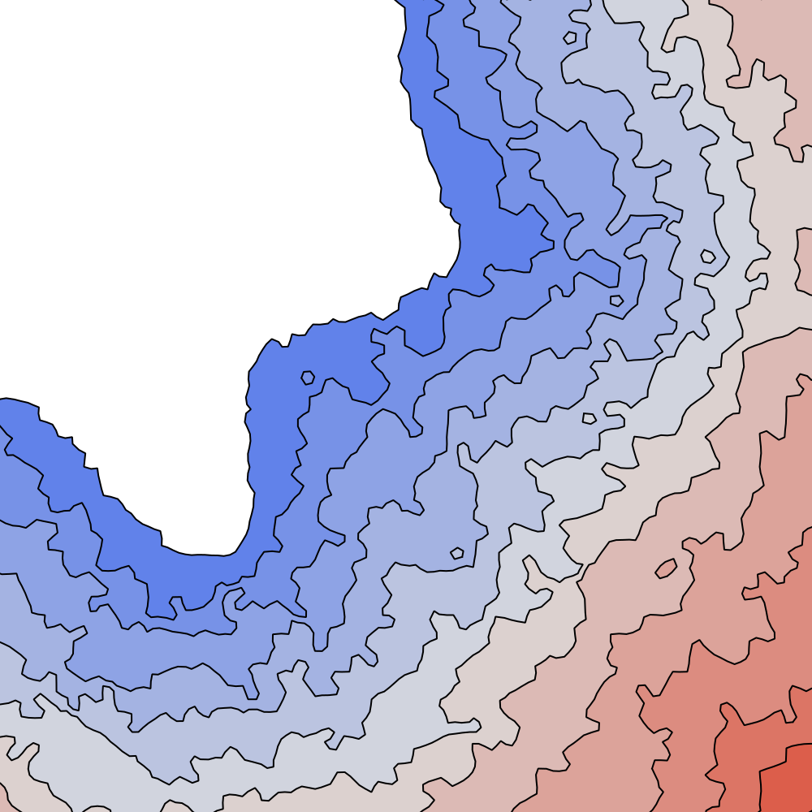
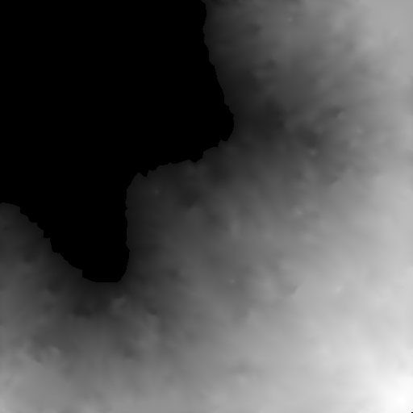
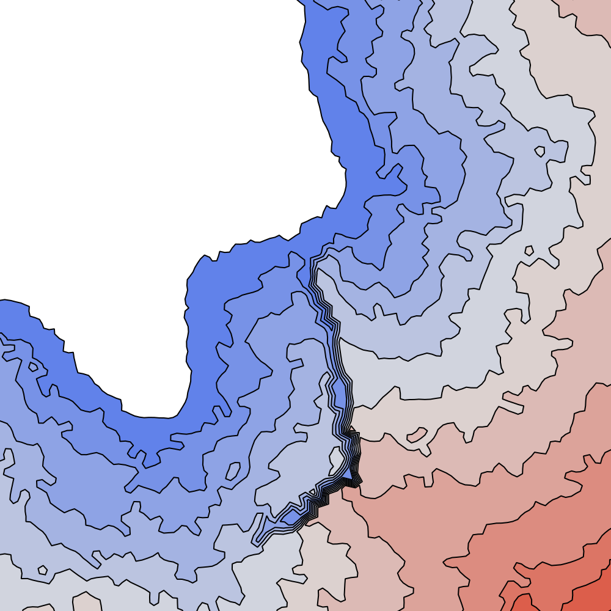
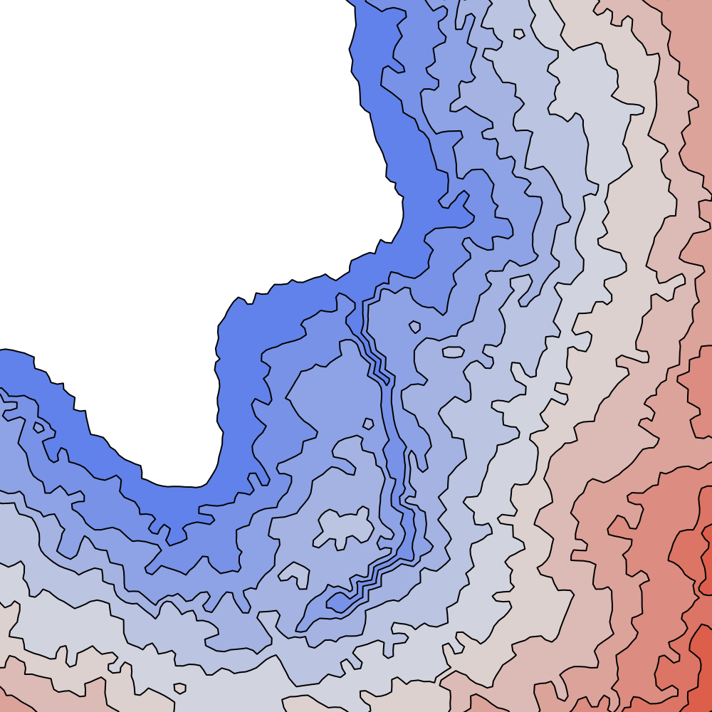

Projeto de pesquisa · Computação Gráfica · IFNMG 2026/2
Rios com elevação explícita
na síntese de terrenos por iso-contornos
Lucas Santos, João Victor e Luis Fhilipe · Prof. Wagner Ferreira de Barros
O problema
O artigo de Huftier et al. (2026) gera terrenos a partir de curvas de nível, mas os autores apontam que rios continuam difíceis: só podem ser sugeridos pintando um mapa de probabilidade.
A proposta
Deixar o usuário desenhar o rio e dizer a altura do leito. Os pontos do rio passam a ser pontos de partida do crescimento que gera o terreno, cada um na altura pedida.
O resultado
A altura do leito passa a ser controlada, sem criar poças. Com um atraso de 2 níveis, o rio forma um canal dentro de um vale: 86% do leito fica abaixo das duas margens.
Como o algoritmo do artigo funciona
Os métodos abaixo são variações deste processo. Entender a "fila de senhas" é o suficiente para acompanhar o resto.
Pontos e vizinhos
Cerca de 3000 pontos são espalhados pela região e ligados por triângulos. Cada ponto conhece seus vizinhos.
Fila de senhas
A partir da costa, o crescimento sorteia um ponto da frente e dá a próxima senha a um vizinho ainda sem senha. O mapa P deixa o sorteio mais frequente em algumas regiões.
Senha vira altura
Quem recebe senha antes fica mais baixo; um histograma converte a ordem em 12 alturas. Como todo ponto é alcançado a partir de um vizinho mais baixo, nunca se formam poças.
Os quatro métodos comparados
Mesma região de costa, histograma e número de pontos da Figura 11 do artigo; semente aleatória 239. O leito pedido vai de 0 (foz, perto da costa) a 0,15 (nascente). Números: média de 5 sementes aleatórias.
Isolinhas: baixo → alto (branco = mar)Terreno: baixo → alto (preto = mar) traçado do rioVer em todos:
Artigo
Método original
0%leito entalhado
+0,16corredor rebaixado
−0,09degrau

Isolinhas
Como funciona
O rio é pintado no mapa de probabilidade P. O crescimento passa mais rápido por essa faixa, então ela recebe senhas cedo e fica baixa.
O que observar
Uma faixa larga de terreno baixo ao longo do rio, sem leito entalhado. Não há como dizer a altura do leito.
Referência
Controle
Referência das medidas


Isolinhas
Como funciona
Sem rio e com o mapa P uniforme: o crescimento avança igual em toda a região. É o terreno natural, contra o qual o corredor e o degrau são medidos.
O que observar
Nenhuma estrutura ao longo do traçado tracejado.
Proposta
Canal que nunca espalha
86%leito entalhado
−0,02corredor rebaixado
+0,07degrau

Isolinhas
Como funciona
Cada ponto do rio fica bloqueado até receber a senha da altura pedida e depois nunca é ponto de partida do crescimento. As margens são alcançadas pelo crescimento normal e ficam mais altas que o leito.
O que observar
Leito entalhado, mas o rio vira uma parede: o lado leste só é alcançado contornando o rio e fica mais alto (degrau).
Proposta · melhor resultado
Canal com atraso D = 2
86%leito entalhado
+0,07corredor rebaixado
−0,06degrau

Isolinhas
Como funciona
Igual ao anterior, mas 2 níveis de altura depois de receber a senha o ponto do rio passa a espalhar o crescimento. Primeiro as margens ficam acima do leito; depois o rio rebaixa o entorno e deixa o crescimento atravessar.
O que observar
Canal dentro de um vale mais escuro dos dois lados, sem degrau.
Números
Média de 5 sementes aleatórias. A linha "Rio como semente" é a primeira versão da proposta: o rio espalha o crescimento na hora (D = 0) e forma só o corredor, como o método original.
Método
Pontos sem vizinho mais baixo
Erro no leito
Leito entalhado
Corredor rebaixado
Degrau
Método original
0
—
0,0%
+0,161
−0,085
Controle
0
—
0,9%
—
—
Rio como semente (D = 0)
0
0,023
0,4%
+0,160
−0,068
Canal que nunca espalha
0
0,023
85,9%
−0,024
+0,067
Canal com atraso D = 2
0
0,023
85,9%
+0,071
−0,056
Pontos sem vizinho mais baixo
Lugares de onde a água não teria para onde escoar. Zero significa que a garantia do artigo (sem poças) se mantém.
Erro no leito
Diferença entre a altura pedida e a gerada, em alturas de 0 a 1. Com 12 alturas possíveis, o menor erro possível é ≈ 0,023.
Leito entalhado
Porcentagem dos pontos do rio pelo menos um nível abaixo das duas margens (20 a 60 m de distância): a forma de vale.
Corredor rebaixado
Quanto a faixa de 0 a 60 m em volta do rio ficou mais baixa que no controle.
Degrau
Quanto uma margem ficou mais alta que a outra, além da diferença que já existe no terreno natural.
O que aprendemos
Aprendizados
A proposta controla a altura do leito (erro no mínimo possível) sem criar poças.
Se o rio espalha o crescimento na hora, ele "puxa" as margens junto: o terreno desce num corredor largo, sem forma de vale. O método original faz o mesmo (leito entalhado: 0%).
Se o rio nunca espalha, o leito fica entalhado (86%), mas o rio vira parede e cria um degrau (+0,07).
Com atraso de 2 níveis, os dois efeitos se combinam: entalhe de 86%, corredor +0,07 e degrau −0,06.
Limitações e próximos passos
O canal tem a largura de um ponto do grafo (~17 m); o rio da Figura 11 tem ~50 m.
Um único traçado de rio e perfis de leito escolhidos pela equipe.
Medidas nas 12 alturas do grafo; área de drenagem e ordem de Strahler ainda não medidas.
Algumas métricas iniciais estavam erradas e foram corrigidas; o histórico está no repositório.